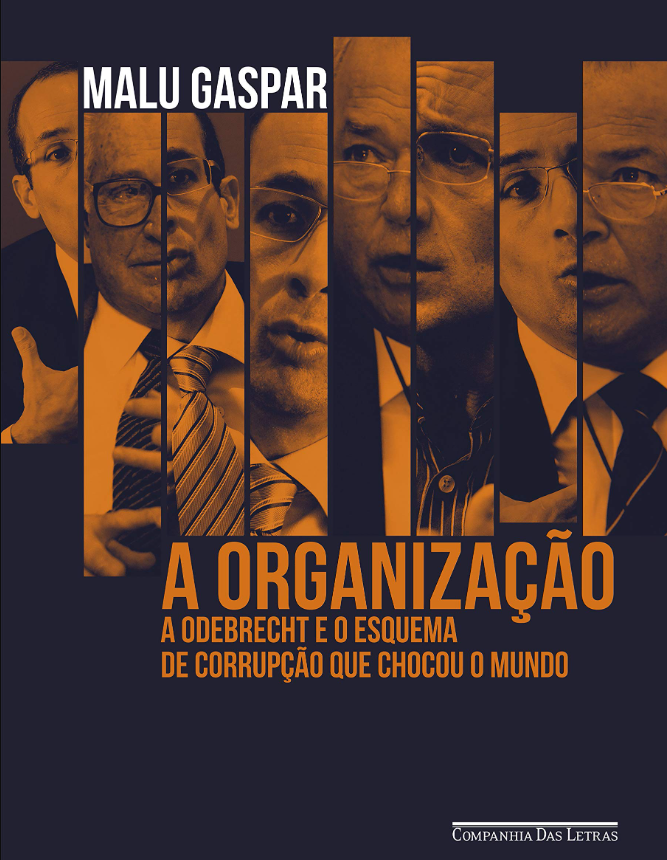
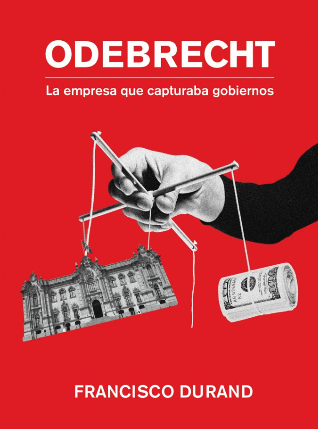
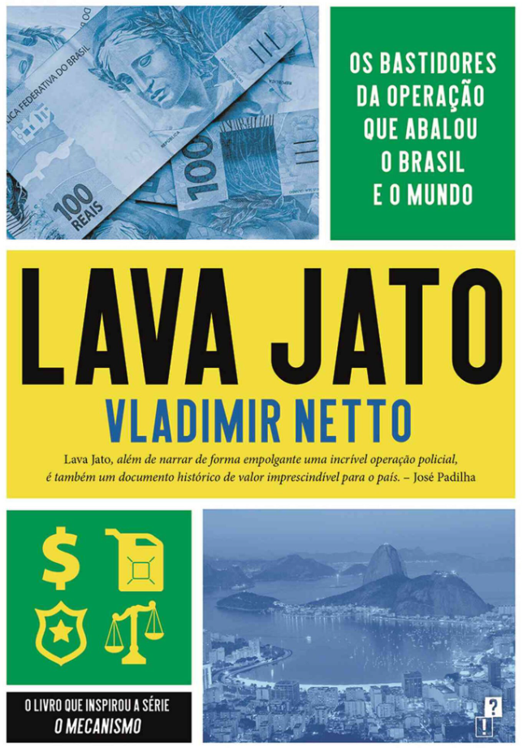
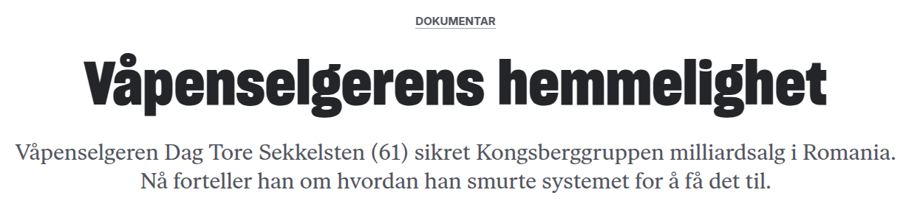
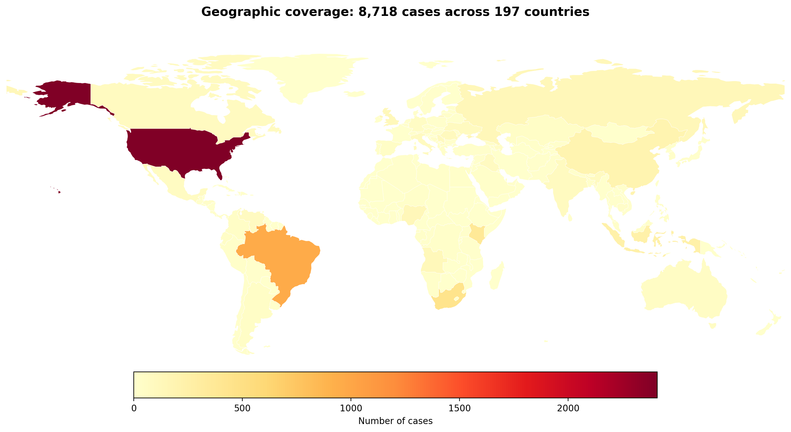
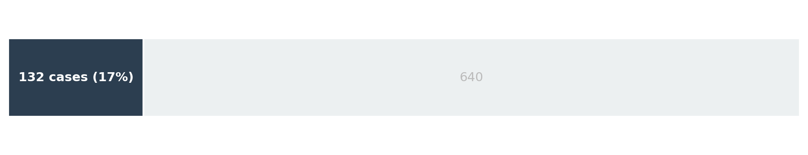

Trust in Illegal Exchange
How is corruption organized?
Trust in illegal exchange
Keangnam, Vietnam (2014): paid an intermediary $500,000 to bribe foreign officials for an $800M real estate deal. The intermediary stole the entire amount.
“There is truly no honor among thieves.”
— U.S. Attorney Preet Bharara
Corrupt agreements cannot be enforced in court. So how do they cooperate?
If trust is what makes corruption work, it is also where corruption is most vulnerable.
We collect worldwide evidence on how corrupt actors solve the trust problem.
Theory: How can trust be established?
Kongsberg banned large agent fees. Bribes moved to an inflated subcontract:
Omnilogic price: 65 → 100 MNOK — no change in deliverables.
“Software costs are best if you want to make changes. You can’t say whether it cost 100 or 200 million.”
Agent helped Airbus sell 30 Caracal helicopters to Kuwait for EUR 1B.
Airbus refused his commission. He sued — and won EUR 12M (ICC arbitration, 2020).
| Trust mechanism | Predicted to dominate when… |
|---|---|
| Repeated interaction | Long horizon, granular payments, stable positions |
| Trust broker | Many buyers and sellers, pairs rarely repeat |
| Contractual formalization | No repeated relation, legal contract can align incentives |
| Reputation | Public track record possible, weak enforcement |
| Violence / coercion | Weak state |
| Source | Cases | Coverage |
|---|---|---|
| FCPA enforcement actions | 661 | 80+ countries |
| TRACE Compendium | 694 | Global |
| World Bank INT reports | 151 | 71 countries |
| DOJ Public Integrity | 512 | US |
| National anti-corruption agencies | 13,291 | HK, SG, ID, NG, KE, ZA |
| UK Serious Fraud Office | 27 | UK / international |
| ICIJ investigations | 390 | Global, leaks |
| Reading notes (26 books) | 221 | BR, NO, ZA, HU |
| DEA press releases | 1,851 | US federal |
| UNODC SHERLOC | 994 | 141 countries |
| OCCRP / journalism | 503 | Global |





LLM Extractions
Prompt:
“Extract all contracts and agreements mentioned. Include arrangements implied by transactional language (‘commission fee’, ‘success fee’, ‘appointed as agent’).”
Case document (Tenaris / Uzbekistan):
“Tenaris agreed to pay the OAO agent approximately 3 to 3.5% of the awarded contracts in exchange for the agent’s services, knowing that all or a portion of the money would be given by the agent to one or more OAO employees.”
→ LLM extracts: contingent_fee: true, fee_structure: "3 to 3.5% of the awarded contracts", type: "agent_agreement"

In 17% of FCPA cases, the document describes a commission or fee tied to results.
Odebrecht and Toledo agree on a $35M bribe for the Interoceânica highway ($814M).
Toledo rigs the bidding. Odebrecht wins (June 2005).
But Toledo has a single 5-year term, no reelection, and is about to leave office.
Why did Toledo trust Odebrecht would pay the bribe?
Bribe agreed: $35M. Bribe paid: $20M. Remaining $15M never paid.
“Toledo left the presidency and lost influence.” — Gaspar (2020)
Why did Odebrecht pay the $20M at all? Possible explanations:
But $15M not paid undermines all three latter stories. Open question.
Rodoanel Sul highway (São Paulo, Odebrecht, 2006–07):
Each addendum is a new round of exchange. Both sides deliver incrementally — neither needs to trust the other with a large one-shot payment.
Toledo couldn’t do this — single term, no repeat game. Result: $15M never paid.
| Defense | Infrastructure | |
|---|---|---|
| Scheme duration | Median 3 years | Median 5 years |
| Agent agreement | 34% | 13% |
| Contingent fee | 20% | 3% |
| Dominant relationship type | Prior business, kinship | Work colleagues |
FCPA cases: defense n = 56, infrastructure n = 286
Defense contracts are lumpy — one award, one delivery. Trust requires a formal contract (Kongsberg: commission per contract win; Airbus: success fee).
Infrastructure is granular — addenda, invoices, milestones. Trust builds through repeated interaction between the same people over years.
| Actual function | Share |
|---|---|
| Money movement | 22% |
| Access / influence | 15% |
| Cover identity | 14% |
| Real service | 3% |
| Official connection | Share |
|---|---|
| None described | 45% |
| Transactional only | 30% |
| Personal tie | 9% |
| Revolving door | 8% |
| Political | 4% |
n = 1,665 intermediaries across FCPA, ICAC, and reading notes
Thank you
8,718 cases · 6 crime types · 197 countries